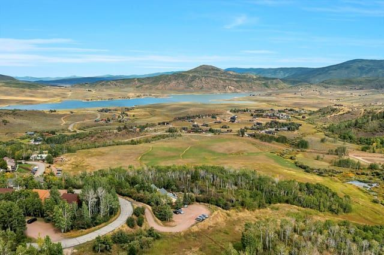
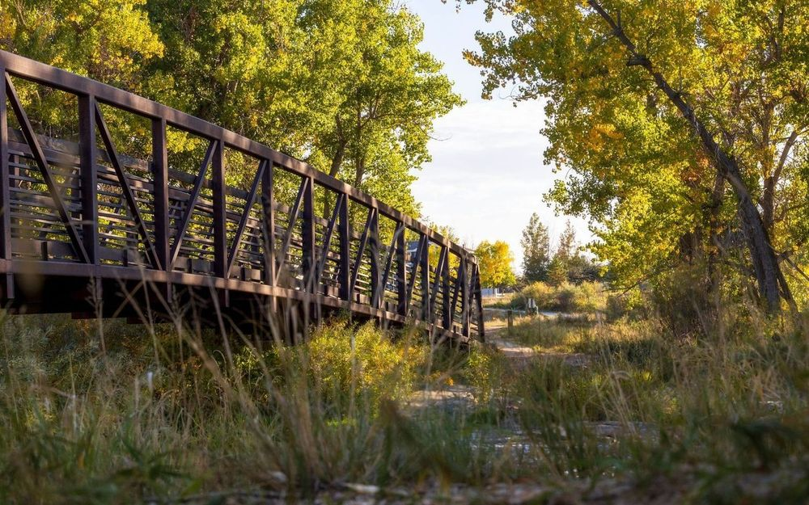
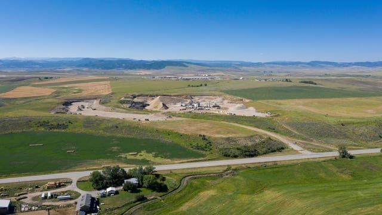
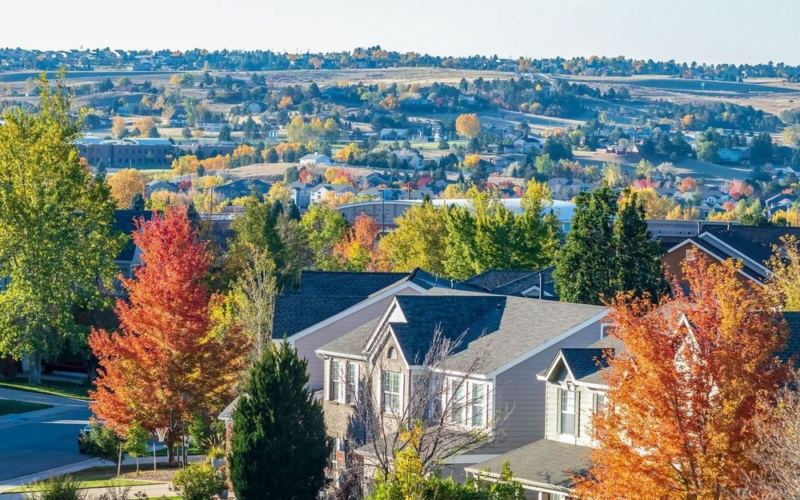

Fish Creek
Fish Creek isn't one market. It's a road with three price points.
August 27, 2026
Ask what a home in Fish Creek costs and the honest answer depends entirely on where the question gets asked.
Continue readingNeighborhoods
The county-wide median is an average of places that behave nothing alike. Choosing the right one of these eleven matters more than anything you will do afterwards.
The eleven

Ski-in condominiums and lodges at the base of Mount Werner. The most rentable inventory in the valley, and the most sensitive to what the resort does next.

Old Town grid, Lincoln Avenue, the Yampa River. Walkable, tightly held, and the one part of Steamboat where a lot still trades on its address alone.

Three price points on one road. A two-bedroom condo asking $595,000 sits inside the same neighbourhood boundary as a fourteen-acre estate — so the “Fish Creek average” describes nothing.

Where the median dollar buys the most square footage, the biggest yard and the shortest walk to a public school. True, and the part every out-of-market buyer already knows.

Up the valley behind town: larger parcels, the hot springs road, and in-district school addresses without a subdivision feel.

Elbow room and views eleven miles out, in the Steamboat school district. Buying acreage here is not buying a house in town — land, access, utilities and zoning shape it as much as the building.

Twenty minutes south past the reservoir. Newer builds at Young's Peak, lots you can still buy outright, and covenants worth reading before you commit.

A real town with a real main street, and the value end of the county that still has inventory. Where a good share of Ashley's closings happen.

The airport, new subdivisions, and the best commute-to-price ratio in the valley. The growth story most Steamboat buyers discover second.

Clark, Steamboat Lake and Hahn's Peak. Trades on privacy rather than proximity; winter access is the first question, not the last.

Yampa and Phippsburg — ranching country, older houses on generous lots, and a summer that now runs in a loop between the two towns.
Reporting from the submarkets
Ashley's own writing on the places above — where the numbers and the ground disagree.
Fish Creek
August 27, 2026
Ask what a home in Fish Creek costs and the honest answer depends entirely on where the question gets asked.
Continue readingSouth Valley
June 18, 2026
Buying acreage here is not the same as buying a house in town, because the land, access, utilities and zoning can shape your experience just as much as the house does.
Continue readingSouth Routt
August 13, 2026
“We recognised a need in this community, especially in Yampa, for not just another food option, but for a place for people to gather.”
Continue readingWhere to next
Start with whichever question is actually yours.
For buyers
The Group's buyer process, start to keys — what happens when, and who does it.
Read the processFor sellers
Pricing, preparation and the first three weeks on market, which decide most of the outcome.
Read the processSearch
The full IRES and Summit MLS inventory, not a curated slice of it.
Start searchingWork with Ashley
Ready to start? Buying, selling or investing — Ashley is here to guide you every step of the way. Reach out today and let's make your Steamboat Springs dream home a reality.